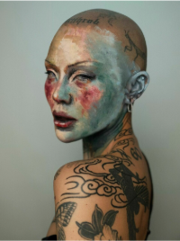
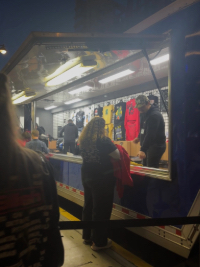
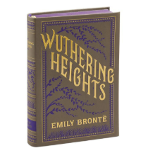

An artist that speaks to me is Mei Pang. She uses makeup to express different styles, creations, and ideas. She doesn't limit herself to the traditional "rules" of makeup. Even the tattoos on her body are completely symmetrical. I find inspiration in her because she isn't afraid to express herself in ways that some people might judge
My favorite musician is Billie Eilish. I went to see her recently on her last tour stop in San Francisco and it was amazing. I enjoyed watching the visuals that she played throughout the show. Something that inspires me is how she is able to create her ideas while still maintaining her personal beliefs. All of her tour merchandise is used upcycled and she provided sustainable options for transportation


Something that I draw inspiration from are book covers. One of the main reasons why I got into Visual Communications was because I liked branding, merchandising, and selling. I love collectors editions of book covers, especially from the Barnes and Noble collection, and I display them around my spaces. One of my favorites is the Flexibound Barnes and Noble Collectible Edition of Emily Brontë's Wuthering Heights.